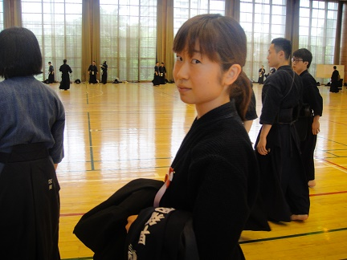
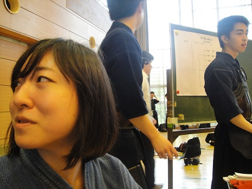
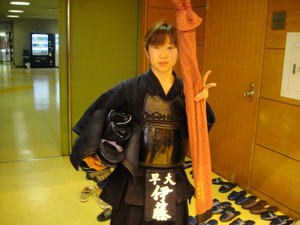

|
【２０１７年新宿区民大会】 4/29に前期新宿区民大会が開催されました 新年度になってから最初の試合でした。その様子をお伝えします！ 
本日はお手伝いとして会場整備からの試合です。  今回は別の大会と日にちが重なり優勝を狙えると闘志を燃やす伊藤（５４）  試合まではそれぞれの会場でお仕事です。 試合が始まります。今回は男子個人、男子団体３チーム、女子団体２チーム参加しています。 これは男子５５期チームですね。 男子５４期チーム。早くもお疲れの池田（５４）と杉浦（５４） 同じく５４期チームの井上（５４）お久しぶり〜！ 55期チーム大将の西川（５５）初戦勝利おめでとう！ こちらが55期チームです 今回カメラマンを務めた田中（５５）です。 ありがとうございました！ 続いて、１軍もといほぼ４段チーム 先鋒と次鋒の２人は良い笑顔ですね ほぼ４段チームも初戦が始まりましたね こちらも初戦勝利です！おめでとう！！ これはアカデミー 役員バッジ似合ってるよ、武田（５４） 小池（５５）と水谷（５５）。どんな会話してるんでしょう・・・ 清田（５４）の役員バッジは水色なんだね  今日の女子代はやる気が違う。 そろそろ女子もアップしなくては 男子はここで昼休憩。お弁当が支給されています。 女子55期チームの２人。姿からして大小って感じですね 恒例の桑原（５５） 女子も頑張るぞ！ 竹刀の点検する安藤（５４） 54期男子チームも頑張るぞと永安（５４）と池田（５４）。  アップも済んで応援する女子達 54期男子チームです。頑張って！ 永安くんはかがんでいるだけです 母 杉浦が１本取りましたね!  勝ったのか負けたのかよく分からない雰囲気です そしてお弁当タイム やはり白いですね 今日は気合いを入れてスーツで来てくれた山本（５５）  女子は全チーム入賞です！（あまり写真撮れていなくてすみません・・・）  上本先輩も応援にきてくださって和気あいあいとしていますね。 集合写真です！女子５５期チーム優勝おめでとう！！！  続いて女子Aチーム。３位おめでとう！  女子Bチーム。こちらも３位おめでとう！と、いうことは・・・  賞状３枚、メダル９個と華々しい感じに！やったね！   続いて男子個人の皆様.。お疲れ様でした  男子５５期チーム  やさぐれてますね。後期区民期待してます！  続いて５４期チームです  こちらも中々悔しいようですね。お疲れ様です。  ラストに（ほぼ）４段チーム。３位入賞おめでとう！  やっぱり阿部（５４）大きいですね  全体です！メダルや賞状が光ってますね！おめでとうございます！ ５４期を主体とした最初の試合、良いスタートを切れたのではないでしょうか！ 次は早明戦です！→前期早明戦へ続きます！ (※写真へのコメントは全て管理人がしております。) |